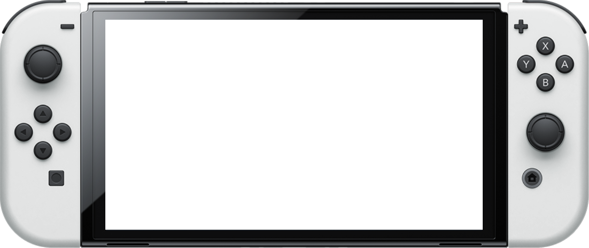

Nintendo se fundó en 1889 en Japón como una empresa de cartas de juego. En la década de 1970, la compañía incursionó en los videojuegos y lanzó éxitos como Donkey Kong en 1981. La Nintendo Entertainment System (NES), lanzada en 1985, la catapultó al éxito global. A lo largo de los años, han seguido innovando con consolas como el SNES, Nintendo 64, Wii y la popular Nintendo Switch. Con franquicias icónicas como Mario y Zelda, Nintendo ha dejado una huella duradera en la industria del entretenimiento.